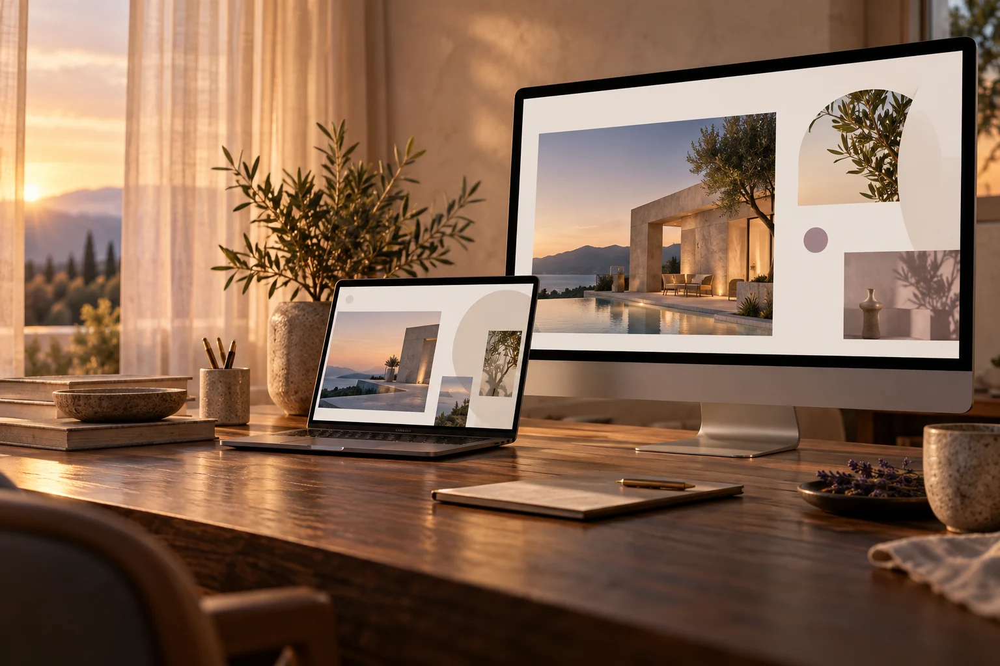

01WEBDESIGN
Websites, die
Eindruck hinterlassen.
Ein Auftritt, der nach dir aussieht und aus Besuchern Anfragen macht – gestaltet, entwickelt und betreut aus einer Hand.
SERVICES
Ob neuer Auftritt oder individuelle Software: Du bekommst Gestaltung und Technik aus einer Hand – von der ersten Idee bis zum laufenden Betrieb.
01WEBDESIGN
Ein Auftritt, der nach dir aussieht und aus Besuchern Anfragen macht – gestaltet, entwickelt und betreut aus einer Hand.
02TECHNICAL SOLUTIONS
Wo Standard-Tools aufhören, fange ich an: individuelle Anwendungen, Automatisierungen und KI-Workflows, gebaut für deinen konkreten Use Case.
Wir lernen uns kennen und klären, was deine Website zeigen und erreichen soll.
Du bekommst einen ersten Entwurf, der deine Idee in Form, Farbe und Struktur übersetzt.
Wir gehen die Website gemeinsam durch und verfeinern Design, Inhalte und Details.

Wir prüfen den fertigen Auftritt, richten das Hosting ein und bringen deine Website online.
PROFIL
Ich habe Business Informatics mit Schwerpunkt Data Science studiert und in zwei Tech-Startups gearbeitet – zuletzt als Engineer bei einem der am schnellsten wachsenden Startups Deutschlands.
Ich gestalte und entwickle Websites, die nach dir aussehen – mit klarer Struktur, eigener Bildsprache und sauberem Code für jeden Bildschirm.
Ich baue Automatisierungen, die wiederkehrende Aufgaben übernehmen und jede Woche Zeit sparen – von der Datenerfassung bis zum fertigen Report.
Ich entwickle Features direkt mit Kunden – vom ersten Prototyp für die Demo bis zur stabilen Lösung in der Produktionsumgebung.
In mehreren Machine-Learning-Projekten habe ich Modelle für ganz unterschiedliche Use Cases trainiert, getestet und Schritt für Schritt verbessert.
Eine neue Website oder ein frischer Blick auf deinen bestehenden Auftritt? Erzähl mir, was du vorhast.